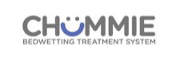
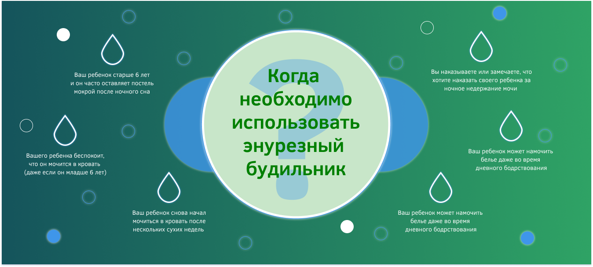

<section class="main">
   <div class="main__container">
      <div class="brends">
         
         
         
         
         
      </div>

      <div class="comarovsky">
         <div class="comarovsky__info">
            <h2>
               Мочевой будильник
            </h2>
            <p>Энурезный или мочевой будильник- это устройство, которое позволит избавиться от энуреза без медикаментов
               и
               неприятных процедур.</p>
            <p>Будильник состоит из датчика, чувствительного к влаге, который встроенным зажимом крепится на трусиках и
               гибким проводом соединяется с блоком сигнализации, закрепленным эластичной лентой на руке ребенка.</p>

            <p> При попадании первой капли жидкости на белье, энурезный будильник срабатывает и звуковым, световым и
               вибросигналом будит маленького соню. Ребенок перестает мочиться в кровать, отключает будильник и
               заканчивает
               мочеиспускание в туалете.Со временем вырабатывается стойкий рефлекс- просыпаться при первых позывах к
               мочеиспусканию. Проблема ночного энуреза уходит навсегда!</p>
         </div>
         <div class="comarovsky__youtube _youtube">
            <span class="_youtube__title">
               Обзор нашего энурезного будильника MoDo-king MA-108
               Доктором Комаровским
            </span>
            <iframe width="588" height="310" src="https://www.youtube.com/embed/evCWREWNHfU"
               title="YouTube video player" frameborder="0"
               allow="accelerometer; autoplay; clipboard-write; encrypted-media; gyroscope; picture-in-picture"
               allowfullscreen></iframe>

            <a href="" class="_youtube__link">
               часто задаваемые вопросы
            </a>
         </div>
      </div>

      <div class="advantages">
         <div class="advantages__item">
            
            <span>Самый широкий ассортимент энурезных будильников</span>
         </div>
         <div class="advantages__item">
            
            <span>Только
               оригинальная
               продукция</span>
         </div>
         <div class="advantages__item">
            
            <span>Официальные представители
               Teqin и MoDo-king
            </span>
         </div>
         <div class="advantages__item">
            
            <span> Профессиональная консультация специалиста
            </span>
         </div>
         <div class="advantages__item">
            
            <span>Гарантийное
               и послегарантийное обслуживание
            </span>
         </div>
         <div class="advantages__item">
            
            <span>Удобная и быстрая оплата и доставка товара
            </span>
         </div>
      </div>

      <div class="details">
            <picture>
               <source srcset="img/main(home)/When_.png" media="(min-width:1000px)">
               
            </picture>
      </div>
   </div>
</section>
